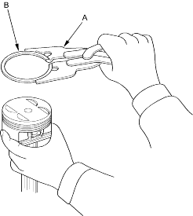
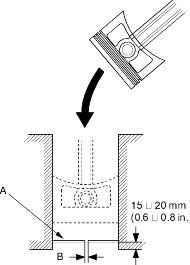

- Using a ring expander (A), remove the old piston rings (B).

- Clean all ring grooves thoroughly with a squared-off broken ring or ring groove cleaner with a blade to fit the piston grooves.
The top ring groove is 1.0 mm (0.04 in.) wide. The second ring groove is 1.2 mm (0.05 in.) wide. The oil ring groove is 2.8 mm (0.11 in.) wide (D17A5 engine) 2.0 mm (0.08 in.) wide (D17A2, D17A8, D17A9 engines).
File down a blade if necessary.
Do not use a wire brush to clean the ring grooves, or cut the ring grooves deeper with cleaning tools.
NOTE: If the piston is to be separated from the connecting rod, do not install new rings yet.
- Using a piston, push a new ring (A) into the cylinder bore 15 - 20 mm (0.6 - 0.8 in.) from the bottom.

- Measure the piston ring end-gap (B) with a feeler gauge:
- If the gap is too small, check to see if you have the proper rings for your engine.
- If the gap is too large, recheck the cylinder bore diameter against the wear limits, refer to the '01 Civic Shop Manual on this CD (see page 7-14).
If the bore is over the service limit, the cylinder block must be rebored.
Piston Ring End-Gap:
Top Ring
Standard (New):0.15 - 0.30 mm
(0.006 - 0.012 in.)
Service Limit:0.60 mm (0.024 in.)
Second Ring
Standard (New):0.30 - 0.45 mm
(0.012 - 0.018 in.)
Service Limit:0.60 mm (0.024 in.)
Oil Ring
D17A5 engine:
Standard (New):0.20 - 0.80 mm
(0.008 - 0.031 in.)
Service Limit:0.90 mm (0.035 in.)
D17A2, D17A8, D17A9 engines:
Standard (New):0.20 - 0.70 mm
(0.008 - 0.028 in.)
Service Limit:0.80 mm (0.031 in.)